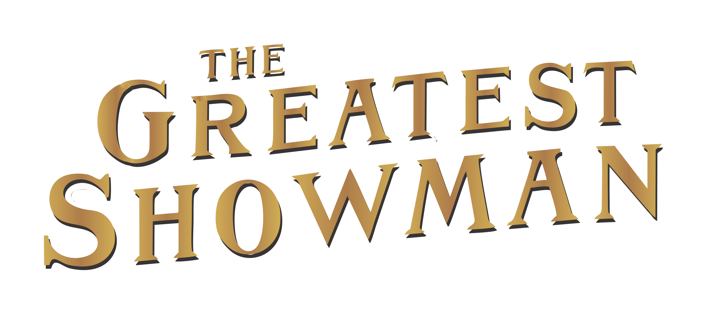

Che ne dici di riscrivere le stelle?
Di che sei stato fatto per essere mio
Niente può tenerci separati
Saresti quello che avevo in mente di trovare
Dipende da te
E dipende da me
Nessuno può dire cosa dobbiamo diventare
Così perché non riscriviamo le stelle?
Magari il mondo può essere nostro
Stanotte
Tu pensi sia facile
Pensi che non voglia correre da te
Ma ci sono le montagne
E porte che non possiamo attraversare
so che ti stai chiedendo il perché
Perché noi siamo capaci di essere
Solo io e te
Ma tra queste mura So che quando andremo fuori
Tu ti sveglierai e capirai che eravamo senza speranza dopo tutto
Nessuno può riscrivere le stelle
Come puoi dire che sarai mia?
Ogni cosa ci tiene separati
E io non sono chi avevi in mente di trovare
Non dipende da te
Non dipende da me
Quanto tutto ci diranno cosa potremmo essere
Come possiamo riscrivere le stelle?
Di che il mondo non può essere nostro
Stanotte
Tutto ciò che voglio è volare con te
Tutto ciò che voglio è cadere con te
Dammi solo tutto di te
Se è impossibile?
Non è impossibile
È impossibile?
Di che è possibile
Come riscriviamo le stelle?
E diciamo che sei stato fatto per essere mio?
E niente può tenerci separati
Perché tu sei chi stavo pensando di trovare?
Dipende da te
E dipende da me
Nessuno può dire cosa dobbiamo diventare
Perché non riscriviamo le stelle?
Cambiamo il mondo affinché sia nostro
Lo sai che ti voglio
Non è un segreto che provo a nascondere
Ma non posso averti
Siamo destinati a lasciarci e
Le mie mani sono legate.
Sto cercando di trattenere il respiro
lascia stare così
Non posso lasciare che questo momento finisca
Hai scatenato un sogno con me
che ora sta diventando più forte
Riesci a sentire questo riecheggiare?
Prendi la mia mano
condividerai questo con me?
Perché tesoro senza di te
tutta la luce di mille riflettori
tutte le stelle che rubiamo dal cielo notturno
non saranno mai abbastanza
mai abbastanza
Torri d'oro sono ancora troppo poco
queste mani potrebbero reggere il mondo ma non sarà
mai abbastanza
mai abbastanza
per me
mai, mai
mai, mai
mai, per me
per me
mai abbastanza
mai abbastanza
mai abbastanza
per me
per me
per me
tutta la luce di mille riflettori
tutte le stelle che rubiamo dal cielo notturno
non saranno mai abbastanza
mai abbastanza
Torri d'oro sono ancora troppo poco
queste mani potrebbero reggere il mondo ma non sarà
mai abbastanza
mai abbastanza
per me
mai, mai
mai, mai
mai, per me
per me
mai abbastanza
mai, mai
mai abbastanza
mai, mai
mai abbastanza
per me
per me
per me
per me.
Chiudo i miei occhi e posso vedere
Il mondo che mi aspetta
Che chiamo mio
Attraverso l' oscurità, attraverso le porte
Attraverso luoghi in cui nessuno è mai stato prima
Ma io mi sento come a casa
Loro possono dire, possono dire che tutto questo sembra assurdo
Loro possono dire, possono dire che ho perso la ragione
Non mi interessa, non mi interessa quindi chiamami mattoPossiamo vivere in un mondo che costruiremo
perché ogni notte io mi sdraio a letto
I colori più luminosi occupano la mia testa
Un milione di sogni mi tengono sveglio
Penso a cosa il mondo potrebbe essere
Una visione di quello che vedo
E ci vorranno solo un milione di sogni
Un milione di sogni per il mondo che andremo a creare
C'è una casa che possiamo costruire
Ogni stanza al suo interno è piena
Di cose che arrivano da lontano
cose speciali che io raccolgo
Tutte per farti sorridere
In un giorno di pioggia
Loro possono dire, possono dire che tutto questo sembra assurdo
Loro possono dire, loro possono dire che abbiamo perso la ragione
Non mi interessa, non mi interessa se ci chiamano mattiScappiamo in un mondo che noi progettiamo
Ogni notte mi sdraio a letto
I colori più luminosi occupano la mia testa
Un milione di sogni mi tengono sveglio
Penso a cosa il mondo potrebbe essere
Una visione di quello che vedo
E ci vorranno solo un milione di sogni
Un milione di sogni per il mondo che andremo a creare
Grosso o piccolo che sia
Lasciami far parte di tutto questo
Condividi i tuoi sogni con me
Puoi aver ragione o puoi avere torto
Ma dimmi che mi porterai con te
Nel mondo che vedi
Nel mondo che vedo chiudendo gli occhi
Chiudo gli occhi per vederlo
Ogni notte mi sdraio a letto
I colori più luminosi occupano la mia testa
Un milione di sogni mi tengono sveglio
Un milione di sogni, un milione di sogni!
Penso a cosa il mondo potrebbe essere
Una visione di quello che vedo
E ci vorranno solo un milione di sogni
Un milione di sogni per il mondo che andremo a creare
Per il mondo che andremo a creare.
{kind=link}
{kind=link}
{kind=link}
{kind=link}